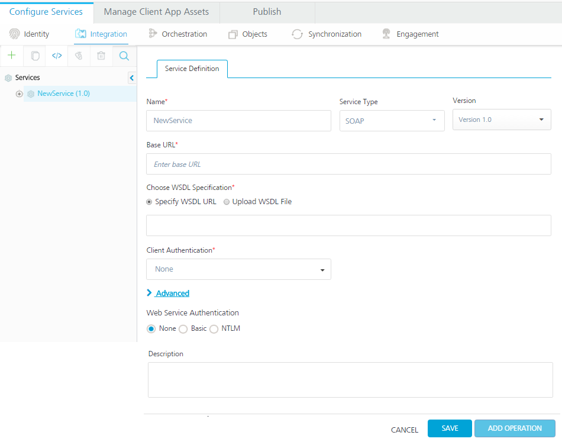
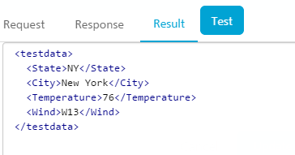

Creating an Integration Service
Now that we can authenticate our users, we need an easy way to retrieve data from an existing back-end system. In many cases, the back-end system does not return the data in the exact format we want, and/or it returns more data than our app needs.
The VoltMX Foundry Integration Services can consume data from any back- end system. You can use our standard technology connectors for REST, JSON, or SOAP web services. You can also use our enterprise business connectors that make it easy to connect to enterprise back-end systems like Salesforce or SAP, and browse for the data objects and services you want to expose to your app.
For this example, we will use a publicly available SOAP web service for getting weather information. To get the current weather and the weather forecast for a ZIP code, we will have to call two separate services.
To call the weather services, follow these steps:
- Under the Configure Services tab, Click the Integration tab.
-
Click *CONFIGURE NEW*.

-
Name your new service Weather and choose SOAP as the Endpoint Type.
-
Then enter the following URLs to complete the service definition:
-
In the Base URL box, type: http://wsf.cdyne.com/WeatherWS/Weather.asmx
-
In the WSDL URL box, type: http://wsf.cdyne.com/WeatherWS/Weather.asmx?wsdl
-
In the Choose WSDL URL, select the option to specify the WSDL URL or upload the WSDL file.
-
If you click Specify WSDL URL, the system displays URL text box. Enter the WSDL URL.
- If you click Upload WSDL File, the system allows you to upload the WSDL file. Click the Upload WSDL File button to navigate to the WSDL file from your local system, and then click Open. The system uploads your WSDL file.
- In the Client Authentication field, select an identity provider from the drop-down list. This drop-down list shows identity providers only if you have created identity providers for OAuth 2.0 in the Identity page.
-
-
Under the Web Service Authentication, select one of the following modes:
-
None: Select this option if you do not want to provide any authentication for the service.
-
Basic: Provide User ID and Password if the external Web service requires form or basic authentication.
-
NTLM: Your service follows the NT LAN Manager authentication process. You are required to provide the User ID, Password, NTLM Host, and NTLM Domain.
-
To enable the proxy, select the Use proxy from settings check box. By default, the check box is cleared.
-
-
Click SAVE to retrieve the WSDL. Each of the available operations are listed in a drop-down box. Select the GetCityForecastByZip and GetCityWeatherByZip. Click Add Operation. This will create two operations under your Weather service that maps to the SOAP web service methods.
-
To test and edit the GetCityWeatherByZip, click the settings icon and choose Edit.

-
The operation details window opens. A sample web service request is provided showing a placeholder for any input parameters. For the GetCityWeatherByZip, the ZIP is the only input parameter displayed as
<ns1:ZIP>?XXX?</ns1:ZIP>in the sample request. At this point, we could hard code a value, but since we want our app to provide the zip code, we need to provide an input variable name:<ns1:ZIP>$zip</ns1:ZIP>. We then need to define that variable under the input tab including a test value of 10036.
-
You can then test the service and see the SOAP web service response.

-
On the Output tab, enter the following parameters and path.
city //City
state //State
temp //Temperature

-
Click the Test button again and the result will be displayed as XML.

The result will be converted to a JSON before being sent to the device.
This is a simple example, but it shows the power and flexibility the VoltMX Foundry Integration Service provides to retrieve data and process it before returning an optimized JSON string to the device. You can also configure additional processing under the advanced tab including deploying custom code that executes before and after the service invocation.
-
Edit the GetCityForecastByZip in the same way. This service returns a repeating data structure for each day providing that day’s weather forecast. This requires the use of the collection ID under the output tab to create a repeating set of JSON objects. After creating the ZIP input parameter the same way as the previous service, enter the following output parameters:
ID xPath CollectionID ForecastList //ForecastResult/Forecast date Forecast/Date ForecastList desc Forecast/Description ForecastList low Forecast/Temperatures/MorningLow ForecastList high Forecast/Temperatures/DaytimeHigh ForecastList daypct Forecast/ProbabilityOfPrecipiation/Daytime ForecastList nightpct Forecast/ProbabilityOfPrecipiation/Nighttime ForecastList Test your service and you will see the resulting XML showing the repeating collections of forecasts.

Publishing and Testing the Service
- Publish the app in the same way published for the Identity Service.
- After publishing, you can access the runtime console for the Integration Services by clicking the Integration icon on the runtime environment.
-
Choose Integration Services in the left pane. This will display the Weather service and the available operations. Choose the GetCityForecastByZip, and then click the resulting service URL to test the service.

-
Enter a test ZIP Code under the Input Parameters tab and click Get Response. This will execute the service directly on the runtime environment and display the exact JSON response that will be returned to the client device.

-
You can also test the service using a cURL command. Return to the publish tab of the VoltMX Foundry app and view the App Service Document again. Now you will see the details for the Weather service.

-
Using the Weather service endpoint above and the VoltMX Foundry provider token retrieved when the Identity Service was tested, you can test the GetCityForecastByZip operation using the following cURL command:
curl -X POST -H "X-VoltMX-Authorization: eyAiYWxnIjogIk5PTkUiLCAidHlwIjogImp3cyIgfQ.eyAiX3Njb3BlIjogImci
LCAiX2FjcyI6ICIxMDAwMDAwMzIiLCAiX3ZlciI6ICJ2MS4xIiwgIl9pZHAiOiA
idXNlcnN0b3JlIiwgIl9hcHAiOiAiZGVmOWM3MzgtMDE2My00ODNlLTk3N2YtMz
UwMjEyNWMxOThjIiwgImlzcyI6ICJodHRwczovLzEwMDAwMDAzMi5hdXRoLmtvb
nljbG91ZC5jb20iLCAiX2VtYWlsIjogImRlbW9Aa29ueS5jb20iLCAiaWF0Ijog
MTQxMjE4NzE1MiwgImV4cCI6IDE0MTIxOTA3NTIsICJfaXNzbWV0YSI6ICIvYXB
pL3YxL21ldGFkYXRhL1V5dzNKQ3VVOF81Z1BGRTc3QjN2Rnc9PSIsICJfcHJvdl
91c2VyaWQiOiAiZGVtb0Brb255LmNvbSIsICJqdGkiOiAiY2M4MGFkNGEtNGQ0N
S00MmFkLTk2ZjUtZTY0NzYwZWViZjI2IiwgIl9hdXRoeiI6ICJleUp3WlhKdGFY
TnphVzl1Y3lJNmUzMHNJbkp2YkdWeklqcGJYWDAiLCAiX3B1aWQiOiAyODA4MjQ
2MDQ5Nzk0NTUwODYgfQ.MC0CFQCP_1JSQe9stMYjr8P4vrgKYuTn5gIUSx6j_R9dbjFFCcTCLAiD6AOdqh0" -H "Accept: application/json" -H "Content-Type: application/x-www-form-urlencoded" -d 'zip=10036' https://kw-demo.voltmxcloud.com/services/Weather/GetCityForecastByZipThe resulting JSON looks like the following:
{
"httpStatusCode":200,"ForecastList":\[
{
"daypct":"10",
"high":"73",
"low":"52",
"date":"2014-09-20T00:00:00",
"nightpct":"00"
}
,
{
"daypct":"20",
"high":"78",
"low":"63",
"date":"2014-09-21T00:00:00",
"nightpct":"10"
}
,
{
"daypct":"10",
"high":"68",
"low":"61",
"date":"2014-09-22T00:00:00",
"nightpct":"50"
}
,
{
"daypct":"00",
"high":"71",
"low":"48",
"date":"2014-09-23T00:00:00",
"nightpct":"00"
}
,
{
"daypct":"10",
"high":"68",
"low":"49",
"date":"2014-09-24T00:00:00",
"nightpct":"10"
}
,
{
"daypct":"00",
"high":"70",
"low":"48",
"date":"2014-09-25T00:00:00",
"nightpct":"10"
}
,
{
"daypct":"00",
"high":"73",
"low":"50",
"date":"2014-09-26T00:00:00",
"nightpct":"00"
}
\],"opstatus":0
}